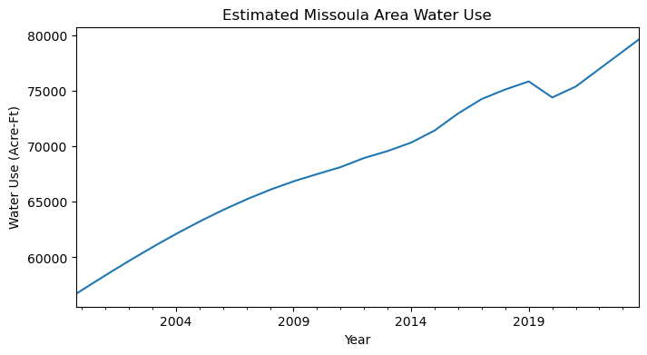
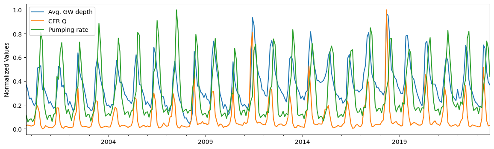
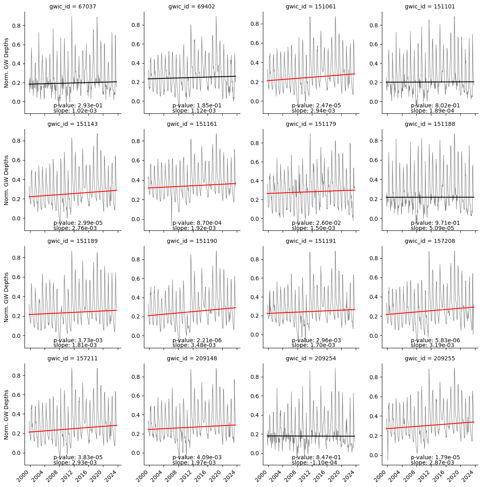

| Source | Inflow (af/yr) | Percent of Total |
|---|---|---|
| Clark Fork River | 192000 | 82.76 |
| Creek Drainages and Tertiary Hillsides | 19000 | 8.19 |
| Lateral Underflow (Bitterroot and Hellgate) | 21000 | 9.05 |
| Total | 232000 | 100.0 |
Missoula Aquifer Sustainability Study
Introduction
The Missoula Aquifer is one of only 64 designated sole source aquifers in the United States.1 As such, it supplies over 75,000 residents, plus businesses, with potable groundwater. Historically, the aquifer has shown incredible resilience to drought and increases in population within the Missoula valley area. There have been no long-term signs of depletion in any of the 27 monitoring wells within the aquifer. This is likely due to the very high transmissivity rates, location within the Clark Fork and Bitterroot watersheds, reasonable historical growth rates of the surrounding population, and only mild changes in historical climate (Whitlock et al. 2017).
Due to the unconfined nature of the aquifer and the high transmissivity rates of the substrate, the upstream inflows, and downstream outflows, of the aquifer are largely driven by the Clark Fork River (Tallman 2005; Miller 1991). In fact, according to previous studies, the Clark Fork River provides over 80% of the annual aquifer recharge (Table 1). Thus, it is fair to say that any long-term changes in streamflow will likely have far reaching impacts to the recharge and overall sustainability of the aquifer.
Climate change is expected to impact the Clark Fork River in numerous ways over the coming decades (Whitlock et al. 2017). Average annual discharge is projected to increase, although there is large uncertainty around this projection. With higher confidence, there is expected to be a shift in the timing of peak runoff leading towards lower base flows in the summer months. In addition, when future drought occurs, the severity is expected to increase, resulting in extended periods of drier than normal conditions (Montana DNRC 2023). These projected changes will undoubtedly affect the groundwater of the Missoula Aquifer and impact local extractions for drinking water, irrigation, and industrial purposes.
From 2000 to 2024 the Missoula area population has increased from 57,000 to 78,000.2 Using the standard assumption of 160 gallons/day/person, we estimate that water use has increased from 10,200 af to 14,100 af over this same time period (Figure 1). Consequently, according to the Montana Ground Water Information Center3 there are currently over 3,500 wells listed in the Missoula area. Of those wells, 247 are labeled as “public water,” which includes the City of Missoula’s water supply (Figure 2). Population in the Missoula area is expected to continue to increase over the next several decades4 likely leading to more wells and higher extraction rates to sustain this growth. In spite of the historical resilience of the aquifer to these changes, many questions still remain unanswered.

What if climate change and population growth converge to maximize stress on the aquifer? While these kinds of scenarios are not determined, they are all well within the realm of realistic possibilities, perhaps even probable. Given the overall resilience that we have seen in the past, it is possible that the aquifer can withstand these stressors and continue to deliver clean and plentiful potable water to the Missoula community in perpetuity. However, to date, no one has studied these different scenarios to make sure that our future water resources are protected. In this analysis, we first evaluate the long-term historial trends in Clark Fork River discharge, City of Missoula pumping rates, and Missoula Aquifer water table depth. In subsequent analyses (not inlcuded in this preliminary report) we plan to specifically study the impacts of plausible future scenarios on the Aquifer to identify critical tipping points and mitigation strategies.
Methods
Study Area
The study area includes the greater Missoula area. Within this region there are 16 monitoring wells used in the analysis (Figure 3).
Data Imputation (Gap Filling)
The historical groundwater measurements from the 16 monitoring wells used in our analyses, were taken sporadically and inconsistently over the study time period (Figure 4). Therefore, in order to compare across all sites we needed to fill the data gaps and resample to monthly average values. We used a two-step approach to gap fill the data. In the first step we identified the two wells with close to continuous data (e.g. 151189 and 151190; Figure 4). We then used seasonal trend decomposition using LOESS (STL; Cleveland et al. (1990)) to fill in the few missing data points of those two wells. In the second step, we developed a multiple linear regression (MLR) model for each well using the two complete wells plus the day of year (i.e. last day of the month) as independent, predictor variables. We used this MLR model to impute data into the gaps of each well independently to create consistent monthly data across all water-years (2000-2023) in each monitoring well used in the study. We tested several other methods including linear interpolation, time-based interpolation, MLR using Clark Fork River flows, and STL by iterating the method 100 times and leaving out 5 known data points to later predict with the model. The multiple linear regression imputation method using the two complete wells and day of year proved to have the best error statistics across the all metrics (MAE, MSE, RMSE, MAPE, and R-squared; Table 2)5.

| MAE | MSE | RMSE | MAPE | R^2 | |
|---|---|---|---|---|---|
| Linear Interpolation | 2.4923 | 13.8497 | 3.7215 | 10.5845 | 0.9556 |
| STL Decomposition | 1.3017 | 3.9748 | 1.9937 | 5.4697 | 0.9873 |
| Time Interpolation | 2.4703 | 13.7026 | 3.7017 | 10.5757 | 0.9563 |
| Q and DOY Regression | 1.6086 | 4.9560 | 2.2262 | 6.1077 | 0.9843 |
| Well Regression | 0.9365 | 1.9474 | 1.3955 | 4.5326 | 0.9929 |
Historical Analysis
Clark Fork River
The Clark Fork River serves as the main source for aquifer recharge in the Missoula Valley (Tallman 2005). While other inputs exist, we focus almost exclusively on the Clark Fork due to the overall magnitude relative to other inputs. A seasonal decomposition using LOESS (Cleveland et al. 1990) shows that there has been a consistent increasing trend in monthly average flows over the study period (2000-2023; Figure 5). Change was steepest through 2011 and then flattened through the rest of the record. In addition, as expected, there is a strong seasonality component with peak flows coming in late spring and baseflows in late summer and early fall. The magnitude of seasonality is increasing, with the peaks getting higher and the troughs getting lower – suggesting an increasing trend in interannual variability through time.

We further investigate the trend of the Clark Fork River flows using a Mann-Kendall statistical significance test (Mann 1945; Kendall 1975), which avoids assumptions of normality and independence. The results indicate a statistically significant (\(p<0.05\)) increasing trend of 24 cfs/month. We further break down the trend analysis into seasons: winter (December, January, February), spring (March, April, May), summer (June, July, August), and fall (September, October, November) (Figure 6). All four seasons have increasing trends, although the summer season’s trend is not statistically significant at the \(p<0.05\) level. The spring runoff trend is by far the strongest, representing a slope 113 cfs/season. Spring is the season where most of the recharge from the Clark Fork River to the Missoula Aquifer occurs (Tallman 2005).

Groundwater Table Depth
We evaluated trends in groundwater table depth for each of the 16 wells within the study site using the Mann-Kendall test. All 16 wells have statistically significant increasing trends and strong seasonality, similar to the Clark Fork River streamflow (Figure 7). On average, there has been approximately a 1.9 foot increase in elevation of the water table over the period of record. Trends and timeseries data are very similar across all the sites, supporting previous studies showing high transmissivity throughout the aquifer (Tallman 2005; Miller 1991).

Additionally, we calculated the 10th, 50th, and 90th quantile regression lines to show trends in lower, median, and upper groundwater values, respectively (Figure 8). The changes in the 10th and 90th quantiles can be thought of as changes in the late Summer and early Spring since those are the times of year when groundwater elevations are at a minimum and maximum, respectively. The results show strong increasing trends in the 90th quantile, suggesting that increases in peak recharge events in the Spring are largely driving the overall trend in the groundwater. Median and lower quantiles show less of an increasing trend. The difference in trends between the 90th and 10th percentile also suggest an overall increase in interannual variability throughout the time period, similar to the seasonality trend in the Clark Fork River seasonal decomposition analysis (Figure 5).

Groundwater Withdrawals
To understand the relationship and patterns of groundwater levels, Clark Fork streamflow, and Missoula City pumping rates, we normalize all monthly values to be between zero and one (Figure 9). We average the normalized groundwater depths across all wells to get a representative groundwater signal to compare to river flows and pumping rates. The signals are remarkably aligned in their seasonality. Essentially, the City is increasing their pumping at the same time streamflow, and thus groundwater, are at their maximum. This is an opportunitistic situation and one that should be monitored closely if streamflow timing were to shift due to changes in snowpack runoff, as projected by climate change studies (Whitlock et al. 2017). The main difference in these three signals is the lagged decrease in groundwater levels in comparison to the river and pumping rate. Groundwater tends to drop much slower than the two independent variables, suggesting there is some storage effect in the unconfined aquifer. This may help to mitigate some future shifts in peak streamflow if they were to occur.

We perform a seasonal decomposition analysis using LOESS on the City pumping rate time series (Cleveland et al. 1990). Similar to the Clark Fork River flows and groundwater level, the City pumping rate has a slight increasing trend and strong seasonality over the study time period (Figure 10). While the overall trend is increasing, there are three smaller trends that are distinct across the time period. From 2000 to 2008 the pumping rate increases, then from 2009 to 2015 the pumping rate decreases, followed by another strong increasing trend from 2016 to 2023. The effects of these inflection points in the pumping rate trends are explored in further detail later in this section.

The most recent 10 water-years (2014-2023) provide an interesting case study. Over this time period, pumping rates have strongly increased (Figure 10 B) and river flows have remained around the same (slight increase; Figure 5 B), yet the groundwater trends from all of the wells have decreased over this time period. Furthermore, most of these decreases are statistically significant (Figure 11). This suggests that there are likely other factors (i.e. groundwater witdrawals), beyond the Clark Fork River flows, influencing groundwater levels.

In order to understand how withdrawals may be impacting groundwater levels over the entire time period, we remove the normalized trend in river flow from the groundwater signal at all wells (Figure 12). This is, we produce a time series of what ground water depth would look like if the increasing trend of the Clark Fork River flow was removed. This allows us to focus on what the groundwater level would be doing if there was no trend in recharge from the river. With the river flow trend removed, increasing trends in groundwater elevation are reduced in all 16 wells. Five of the 16 lose statistical significance and one shifts from increasing to decreasing; although not statistically significant. This suggests that if the river flows were not increasing over this time period, groundwater trends would not have the same strong increasing trend that we see in the record. Thus, it appears that there is a potential for the river to mask the impact of City pumping rates and that without the increasing streamflow we may see much different behavior in the aquifer water table.

In reality there is not a single long-term trend in pumping rates, but instead, three short-term trends (Figure 10 B). The first trend is increasing from 2000 to 2008, the next trend is decreasing from 2009 to 2015, and the last trend is increasing from 2016 to 2023. With the effects from the Clark Fork River trends removed we explore the trends in the average normalized groundwater elevation and pumping rates over these three distinct time periods (Figure 13). In the first time period (2000-2008) groundwater elevation decreases as pumping rates increase. In the second time period (2009-2015) groundwater elevation increases as pumping rates decrease. And in the third time period (2016-2023) groundwater elevation decreases as pumping rates increase. All trends in both the groundwater and pumping rates are statistically significant. This analysis suggests that City pumping rates can impact the groundwater level in statistically signifacant ways. Therefore, without the recent increase in streamflow, we might be experiencing very different trends in the Missoula Aquifer level. If trends in Clark Fork River flows were to reverse (or even stabilize) and pumping rates were to continue to increase, it is possible that an unstainable condition in the groundwater level could be created.
Summary
We define sustainable aquifer conditions as those in which groundwater depth is either not changing or increasing over time. Over the past 23 years the Missoula Aquifer has been incredibly resilient and even with varying pumping rates all groundwater wells show an overall increasing water table elevation. However, over the most recent 10-years of data, all groundwater levels are decreasing and most of them significantly. This is likely due to the smaller increasing trend in recharge from the river and increasing pumping rates from the City. Additionally, when the trend in the river is removed from the groundwater time series, overall trends in the water table depth are reduced and trends in shorter time periods follow, inversely, the trends in pumping rates. We believe that if population continues to grow and pumping rates increase to match demand, this could present an unsustainable aquifer condition if recharge rates stabilize, or worse decrease. Given these results, we believe that, while the groundwater table has been historically stable over the period of record, the City should not rest on these laurels and should continue to look for ways to mitigate the impacts of increasing population and climate change in the valley.
References
Cleveland, Robert B., William S. Cleveland, Jean E. McRae, and Irma Terpenning. 1990. “STL: A Seasonal-Trend Decomposition.” J. Off. Stat 6 (1): 3–73.
Kendall, Maurice George. 1975. “Rank Correlation Methods.”
Mann, Henry B. 1945. “Nonparametric Tests Against Trend.” Econometrica: Journal of the Econometric Society, 245–59. https://www.jstor.org/stable/1907187.
Miller, Ross. 1991. “Numerical Flow Model of the Missoula Aquifer : Interpretation of Aquifer Properties and River Interaction.” Graduate Student Theses, Dissertations, & Professional Papers, January.
Montana DNRC. 2023. “Montana Drought Management Plan.” Helena, MT.
Tallman, Amelia. 2005. “Sources of Water Captured by Municipal Supply Wells in a Highly Conductive Aquifer Western Montana.” Graduate Student Theses, Dissertations, & Professional Papers, January.
Whitlock, Cathy, Wyatt F Cross, Bruce D Maxwell, Nick Silverman, and Alisa A Wade. 2017. “2017 Montana Climate Assessment: Stakeholder Driven, Science Informed,” September, 1–269. https://doi.org/10.15788/M2WW8W.